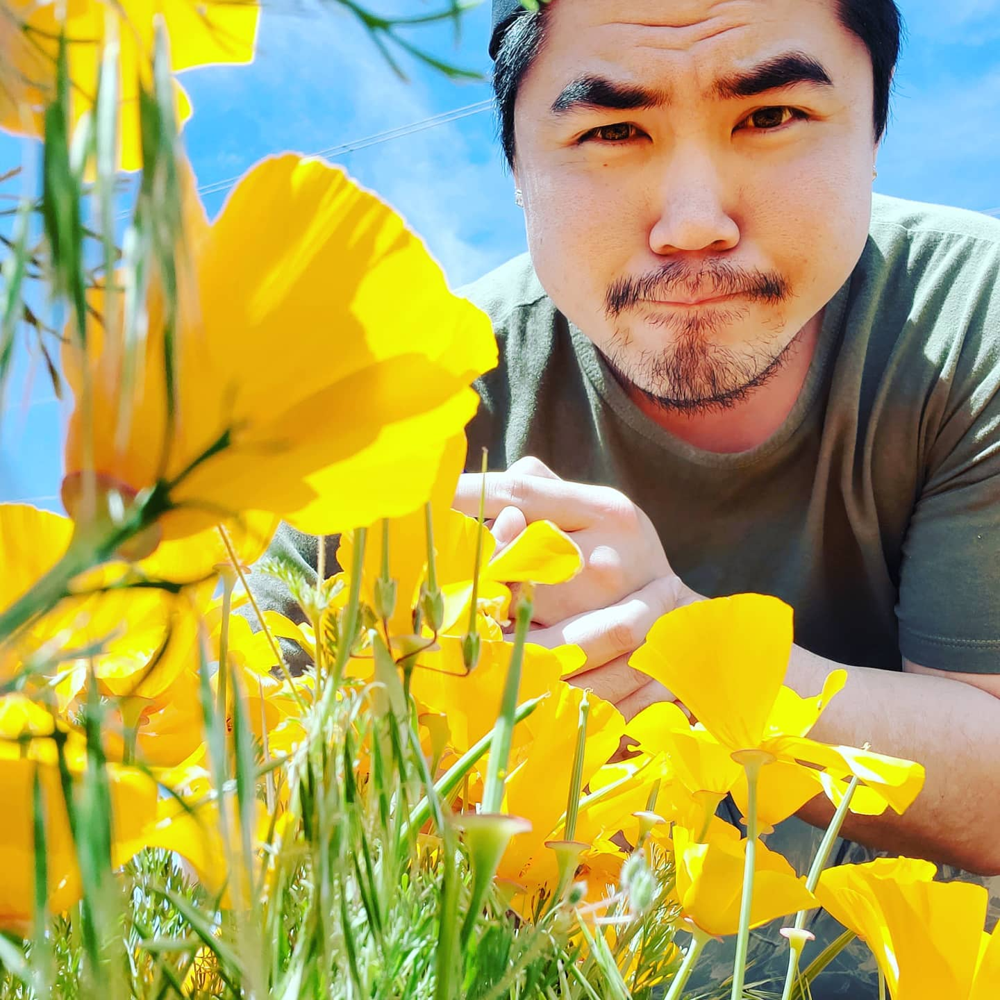

About Me

Hello! My name is Andy P. Nguyen. I am studying to become a full stack web developer. It is by far the most challenging thing I have ever done in my life and I really hope that I can make an impact as I set off on this journey so thank you so much for taking the time to see all of this!
I live in Irvine, California and for the last half decade, I had dedicated my career to the Walt Disney Company. Unfortunately, that plan came to a sudden end because of the current state of California caused by the Covid-19 pandemic. I am back on my feet working for Tiffany & Co. while prioritizing and focusing on my studies to find success in a career slated with Blizzard Entertainment, Square-Enix, or Walt Disney Imagineering. I know it's going to be a tough road, but I am determined to prevail through this shit show we call "2020."